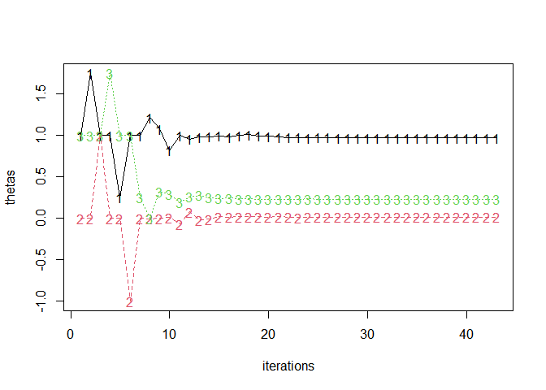

Julia (mixed-effects) regression modelling from R. Powered by the {JuliaConnectoR} R package and Julia libraries GLM, StatsModels, and MixedModels.
Installation
You can install the development version of jlme from GitHub with:
# install.packages("remotes")
remotes::install_github("yjunechoe/jlme")jlme is experimental and under active development: see NEWS.md for the latest updates.
Setup
jlme uses {JuliaConnectoR} to connect to a Julia session. Jump down to the Julia troubleshooting section for issues related to Julia installation and configuration.
Fit models
Once set up, (g)lm() and (g)lmer complements in Julia are available via jlm() and jlmer(), respectively.
Fixed effects models
# lm(mpg ~ hp, mtcars)
jlm(mpg ~ hp, mtcars)
#> <Julia object of type StatsModels.TableRegressionModel>
#>
#> mpg ~ 1 + hp
#>
#> ────────────────────────────────────────────────────────────────────────────
#> Coef. Std. Error z Pr(>|z|) Lower 95% Upper 95%
#> ────────────────────────────────────────────────────────────────────────────
#> (Intercept) 30.0989 1.63392 18.42 <1e-75 26.8964 33.3013
#> hp -0.0682283 0.0101193 -6.74 <1e-10 -0.0880617 -0.0483948
#> ────────────────────────────────────────────────────────────────────────────Contrasts in factor columns are preserved:
x <- mtcars
# Sum code `am`
x$am_sum <- factor(x$am)
contrasts(x$am_sum) <- contr.sum(2)
# Helmert code `cyl`
x$cyl_helm <- factor(x$cyl)
contrasts(x$cyl_helm) <- contr.helmert(3)
colnames(contrasts(x$cyl_helm)) <- c("4vs6", "4&6vs8")
jlm(mpg ~ am_sum + cyl_helm, x)
#> <Julia object of type StatsModels.TableRegressionModel>
#>
#> mpg ~ 1 + am_sum + cyl_helm
#>
#> ───────────────────────────────────────────────────────────────────────────────
#> Coef. Std. Error z Pr(>|z|) Lower 95% Upper 95%
#> ───────────────────────────────────────────────────────────────────────────────
#> (Intercept) 20.6739 0.572633 36.10 <1e-99 19.5516 21.7963
#> am_sum: 1 -1.27998 0.648789 -1.97 0.0485 -2.55158 -0.00837293
#> cyl_helm: 4vs6 -3.07806 0.767861 -4.01 <1e-04 -4.58304 -1.57308
#> cyl_helm: 4&6vs8 -2.32983 0.414392 -5.62 <1e-07 -3.14203 -1.51764
#> ───────────────────────────────────────────────────────────────────────────────Mixed effects models
jlmer() with lmer()/glmer() syntax:
# lme4::lmer(Reaction ~ Days + (Days | Subject), lme4::sleepstudy)
jlmer(Reaction ~ Days + (Days | Subject), lme4::sleepstudy, REML = TRUE)
#> <Julia object of type LinearMixedModel>
#>
#> Linear mixed model fit by REML
#> Reaction ~ 1 + Days + (1 + Days | Subject)
#> REML criterion at convergence: 1743.6282719599653
#>
#> Variance components:
#> Column Variance Std.Dev. Corr.
#> Subject (Intercept) 612.10016 24.74066
#> Days 35.07171 5.92214 +0.07
#> Residual 654.94001 25.59180
#> Number of obs: 180; levels of grouping factors: 18
#>
#> Fixed-effects parameters:
#> ──────────────────────────────────────────────────
#> Coef. Std. Error z Pr(>|z|)
#> ──────────────────────────────────────────────────
#> (Intercept) 251.405 6.8246 36.84 <1e-99
#> Days 10.4673 1.54579 6.77 <1e-10
#> ──────────────────────────────────────────────────
# lme4::glmer(r2 ~ Anger + Gender + (1 | id), lme4::VerbAgg, family = "binomial")
jlmer(r2 ~ Anger + Gender + (1 | id), lme4::VerbAgg, family = "binomial")
#> <Julia object of type GeneralizedLinearMixedModel>
#>
#> Generalized Linear Mixed Model fit by maximum likelihood (nAGQ = 1)
#> r2 ~ 1 + Anger + Gender + (1 | id)
#> Distribution: Bernoulli{Float64}
#> Link: LogitLink()
#>
#> logLik deviance AIC AICc BIC
#> -4748.2525 9496.5050 9504.5050 9504.5102 9532.2401
#>
#> Variance components:
#> Column VarianceStd.Dev.
#> id (Intercept) 1.12074 1.05865
#>
#> Number of obs: 7584; levels of grouping factors: 316
#>
#> Fixed-effects parameters:
#> ────────────────────────────────────────────────────
#> Coef. Std. Error z Pr(>|z|)
#> ────────────────────────────────────────────────────
#> (Intercept) -1.10115 0.280681 -3.92 <1e-04
#> Anger 0.0462741 0.0134906 3.43 0.0006
#> Gender: M 0.260057 0.153847 1.69 0.0910
#> ────────────────────────────────────────────────────Diagnose models
Supports broom-style tidy() and glance() methods for Julia regression models.
Summarize model fit
Get information about model components with tidy()
# Note that MixedModels/`jlmer()` defaults to ML (REML=false)
jmod <- jlmer(Reaction ~ Days + (Days | Subject), lme4::sleepstudy)
tidy(jmod)
#> effect group term estimate std.error statistic
#> 1 fixed <NA> (Intercept) 251.40510485 6.632258 37.906414
#> 2 fixed <NA> Days 10.46728596 1.502236 6.967806
#> 12 ran_pars Subject sd__(Intercept) 23.78046792 NA NA
#> 3 ran_pars Subject cor__(Intercept).Days 0.08133207 NA NA
#> 21 ran_pars Subject sd__Days 5.71682816 NA NA
#> 11 ran_pars Residual sd__Observation 25.59182388 NA NA
#> p.value
#> 1 2.017794e-314
#> 2 3.219214e-12
#> 12 NA
#> 3 NA
#> 21 NA
#> 11 NAGet goodness-of-fit measures of a model with glance()
glance(jmod)
#> nobs df sigma logLik AIC BIC deviance df.residual
#> 1 180 6 25.59182 -875.9697 1763.939 1783.097 1751.939 174Inspect model objects
Check singular fit
issingular(jmod)
#> [1] FALSEList all properties of a MixedModel object (properties are accessible via $)
propertynames(jmod)
#> [1] "A" "b" "beta" "betas" "corr" "dims"
#> [7] "feterm" "formula" "L" "lambda" "lowerbd" "objective"
#> [13] "optsum" "parmap" "PCA" "pvalues" "rePCA" "reterms"
#> [19] "sigma" "sigmarhos" "sigmas" "sqrtwts" "stderror" "theta"
#> [25] "u" "vcov" "X" "Xymat" "y" "β"
#> [31] "βs" "θ" "λ" "σ" "σs" "σρs"Check optimization summary
jmod$optsum
#> <Julia object of type OptSummary{Float64}>
#> Initial parameter vector: [1.0, 0.0, 1.0]
#> Initial objective value: 1784.642296192471
#>
#> Optimizer (from NLopt): LN_BOBYQA
#> Lower bounds: [0.0, -Inf, 0.0]
#> ftol_rel: 1.0e-12
#> ftol_abs: 1.0e-8
#> xtol_rel: 0.0
#> xtol_abs: [1.0e-10, 1.0e-10, 1.0e-10]
#> initial_step: [0.75, 1.0, 0.75]
#> maxfeval: -1
#> maxtime: -1.0
#>
#> Function evaluations: 57
#> Final parameter vector: [0.9292213025841999, 0.018168360086059557, 0.22264488361408383]
#> Final objective value: 1751.9393444646894
#> Return code: FTOL_REACHEDAssess uncertainty
Functions parametricbootstrap() and profilelikelihood() can be used to assess the variability of parameter estimates.
Parametric bootstrap
Experimental support for MixedModels.parametricbootstrap via parametricbootstrap():
samp <- parametricbootstrap(jmod, nsim = 100L, seed = 42L)
samp
#> <Julia object of type MixedModelBootstrap{Float64}>
#> MixedModelBootstrap with 100 samples
#> parameter min q25 median mean q75 max
#> ┌────────────────────────────────────────────────────────────────────────────
#> 1 │ β1 228.0 246.58 250.863 250.977 256.082 264.406
#> 2 │ β2 6.72055 9.91274 10.8382 10.696 11.6725 13.7769
#> 3 │ σ 21.6856 24.6536 25.6211 25.838 26.7439 30.5968
#> 4 │ σ1 3.57556 17.8908 22.1421 21.5799 25.6259 31.9446
#> 5 │ σ2 1.63637 4.53406 5.36349 5.47536 6.38651 8.34052
#> 6 │ ρ1 -0.739267 -0.226513 0.120712 0.107686 0.389495 1.0
#> 7 │ θ1 0.146373 0.675859 0.845334 0.839596 1.02343 1.29287
#> 8 │ θ2 -0.18147 -0.0508505 0.0248657 0.0155747 0.0708033 0.226194
#> 9 │ θ3 0.0 0.156785 0.193042 0.188678 0.238505 0.334108
tidy(samp)
#> effect group term estimate conf.low conf.high
#> 1 fixed <NA> (Intercept) 251.40510485 240.8972974 263.280668
#> 2 fixed <NA> Days 10.46728596 7.7302901 13.540729
#> 5 ran_pars Subject sd__(Intercept) 23.78046792 12.5974975 31.944579
#> 4 ran_pars Subject cor__(Intercept).Days 0.08133207 -0.5948863 1.000000
#> 6 ran_pars Subject sd__Days 5.71682816 3.6653412 8.073549
#> 3 ran_pars Residual sd__Observation 25.59182388 22.4968576 29.124647Profiling
Experimental support for MixedModels.profile via profilelikelihood():
prof <- profilelikelihood(jmod)
prof
#> <Julia object of type MixedModelProfile{Float64}>
#> MixedModelProfile -- Table with 11 columns and 176 rows:
#> p ζ β1 β2 σ σ1 σ2 ρ1 ⋯
#> ┌──────────────────────────────────────────────────────────────────────────
#> 1 │ σ -4.365 251.405 10.4673 20.1933 25.5128 5.97319 -0.0159232 ⋯
#> 2 │ σ -3.77902 251.405 10.4673 20.8002 25.3434 5.94786 -0.00711109 ⋯
#> 3 │ σ -3.20526 251.405 10.4673 21.4255 25.1627 5.92133 0.00263598 ⋯
#> 4 │ σ -2.64336 251.405 10.4673 22.0695 24.9702 5.89214 0.0129078 ⋯
#> 5 │ σ -2.09298 251.405 10.4673 22.7328 24.7636 5.86167 0.0241968 ⋯
#> 6 │ σ -1.55378 251.405 10.4673 23.4162 24.5426 5.82871 0.0366992 ⋯
#> 7 │ σ -1.02542 251.405 10.4673 24.12 24.3063 5.79389 0.0501628 ⋯
#> 8 │ σ -0.507597 251.405 10.4673 24.845 24.0525 5.75669 0.0649969 ⋯
#> 9 │ σ 0.0 251.405 10.4673 25.5918 23.7805 5.71683 0.0813321 ⋯
#> 10 │ σ 0.497684 251.405 10.4673 26.3611 23.4885 5.6743 0.0993046 ⋯
#> 11 │ σ 0.985728 251.405 10.4673 27.1534 23.1743 5.62882 0.119204 ⋯
#> 12 │ σ 1.46442 251.405 10.4673 27.9696 22.836 5.5802 0.141262 ⋯
#> 13 │ σ 1.93402 251.405 10.4673 28.8104 22.4727 5.52809 0.165869 ⋯
#> 14 │ σ 2.39481 251.405 10.4673 29.6763 22.0799 5.47226 0.193415 ⋯
#> 15 │ σ 2.84704 251.405 10.4673 30.5684 21.6557 5.41243 0.224387 ⋯
#> 16 │ σ 3.29094 251.405 10.4673 31.4872 21.196 5.34818 0.259442 ⋯
#> 17 │ σ 3.72677 251.405 10.4673 32.4337 20.6956 5.27882 0.299408 ⋯
#> ⋮ │ ⋮ ⋮ ⋮ ⋮ ⋮ ⋮ ⋮ ⋮ ⋱
tidy(prof)
#> effect group term estimate conf.low conf.high
#> 1 fixed <NA> (Intercept) 251.405105 237.680694 265.129516
#> 2 fixed <NA> Days 10.467286 7.358653 13.575919
#> 12 ran_pars Subject sd__(Intercept) 23.780468 14.381431 37.718099
#> 21 ran_pars Subject sd__Days 5.716828 0.000000 8.753389
#> 11 ran_pars Residual sd__Observation 25.591824 22.898262 28.858001Julia interoperability
Functions jl_get() and jl_put() transfers data between R and Julia.
Bring Julia objects into R
Example 1: extract PCA of random effects and return as an R list:
jmod$rePCA
#> <Julia object of type @NamedTuple{Subject::Vector{Float64}}>
#> (Subject = [0.5406660352881864, 1.0],)
jl_get(jmod$rePCA)
#> $Subject
#> [1] 0.540666 1.000000Example 2: extract fitlog and plot
fitlog <- jl_get(jl("refit!(deepcopy(x); thin=1)", x = jmod)$optsum$fitlog)
thetas <- t(sapply(fitlog, `[[`, 1))
matplot(thetas, type = "o", xlab = "iterations")
Julia session
See information about the running Julia environment (e.g., the list of loaded Julia libraries) with jlme_status():
jlme_status()
#> jlme 0.3.0
#> R version 4.4.1 (2024-06-14 ucrt)
#> Julia Version 1.10.5
#> Commit 6f3fdf7b36 (2024-08-27 14:19 UTC)
#> Build Info:
#> Official https://julialang.org/ release
#> Platform Info:
#> OS: Windows (x86_64-w64-mingw32)
#> CPU: 8 × 11th Gen Intel(R) Core(TM) i7-1165G7 @ 2.80GHz
#> WORD_SIZE: 64
#> LIBM: libopenlibm
#> LLVM: libLLVM-15.0.7 (ORCJIT, tigerlake)
#> Threads: 1 default, 0 interactive, 1 GC (on 8 virtual cores)
#> Status `C:\Users\jchoe\AppData\Local\Temp\jl_ddW8gS\Project.toml`
#> [38e38edf] GLM v1.9.0
#> [ff71e718] MixedModels v4.26.0
#> [3eaba693] StatsModels v0.7.4
#> [9a3f8284] RandomOn setup, jlme loads GLM, StatsModels, and MixedModels, as well as those specified in jlme_setup(add). Other libraries such as Random (required for parametricbootstrap()) are loaded on an as-needed basis.
More with {JuliaConnectoR}
While users will typically not need to interact with {JuliaConnectoR} directly, it may be useful for extending jlme features with other packages in the Julia modelling ecosystem. A simple way to do that is to use juliaImport(), which creates makeshift bindings to any Julia library.
Here’s an example replicating a workflow using Effects.empairs for post-hoc pairwise comparisons:
# New model: 2 (M/F) by 3 (curse/scold/shout) factorial
jmod2 <- jlmer(
r2 ~ Gender * btype + (1 | id),
data = lme4::VerbAgg,
family = "binomial"
)
jmod2
#> <Julia object of type GeneralizedLinearMixedModel>
#>
#> Generalized Linear Mixed Model fit by maximum likelihood (nAGQ = 1)
#> r2 ~ 1 + Gender + btype + Gender & btype + (1 | id)
#> Distribution: Bernoulli{Float64}
#> Link: LogitLink()
#>
#> logLik deviance AIC AICc BIC
#> -4341.4933 8682.9867 8696.9867 8697.0014 8745.5232
#>
#> Variance components:
#> Column VarianceStd.Dev.
#> id (Intercept) 1.52160 1.23353
#>
#> Number of obs: 7584; levels of grouping factors: 316
#>
#> Fixed-effects parameters:
#> ─────────────────────────────────────────────────────────────────
#> Coef. Std. Error z Pr(>|z|)
#> ─────────────────────────────────────────────────────────────────
#> (Intercept) 0.738396 0.0956957 7.72 <1e-13
#> Gender: M 0.404282 0.201612 2.01 0.0449
#> btype: scold -1.01214 0.0742669 -13.63 <1e-41
#> btype: shout -1.77376 0.0782721 -22.66 <1e-99
#> Gender: M & btype: scold 0.130832 0.156315 0.84 0.4026
#> Gender: M & btype: shout -0.533658 0.168832 -3.16 0.0016
#> ─────────────────────────────────────────────────────────────────
library(JuliaConnectoR)
# First call downloads the library (takes a minute)
Effects <- juliaImport("Effects")
# Call `Effects.empairs` using R syntax `Effects$empairs()`
pairwise <- Effects$empairs(jmod2, dof = glance(jmod2)$df.residual)
pairwise
#> <Julia object of type DataFrames.DataFrame>
#> 15×7 DataFrame
#> Row │ Gender btype r2: Y err dof t Pr(>|t|) ⋯
#> │ String String Float64 Float64 Int64 Float64 Float64 ⋯
#> ─────┼──────────────────────────────────────────────────────────────────────────
#> 1 │ F > M curse -0.404282 0.201612 7577 -2.00524 0.0449725 ⋯
#> 2 │ F curse > scold 1.01214 0.13461 7577 7.51901 6.15243e-
#> 3 │ F > M curse > scold 0.477022 0.196994 7577 2.4215 0.0154799
#> 4 │ F curse > shout 1.77376 0.136284 7577 13.0152 2.57693e-
#> 5 │ F > M curse > shout 1.90314 0.202352 7577 9.4051 6.75459e- ⋯
#> 6 │ M > F curse > scold 1.41642 0.201127 7577 7.0424 2.05522e-
#> 7 │ M curse > scold 0.881304 0.247263 7577 3.56424 0.0003671
#> 8 │ M > F curse > shout 2.17805 0.202251 7577 10.769 7.53779e-
#> 9 │ M curse > shout 2.30742 0.251552 7577 9.17273 5.84715e- ⋯
#> 10 │ F > M scold -0.535114 0.196498 7577 -2.72326 0.0064789
#> 11 │ F scold > shout 0.761627 0.135565 7577 5.61817 1.99834e-
#> 12 │ F > M scold > shout 0.891002 0.201868 7577 4.41378 1.02988e-
#> 13 │ M > F scold > shout 1.29674 0.197648 7577 6.56086 5.70179e- ⋯
#> 14 │ M scold > shout 1.42612 0.247866 7577 5.75357 9.07797e-
#> 15 │ F > M shout 0.129376 0.202988 7577 0.637355 0.523913
#> 1 column omittedNote that Julia DataFrame objects such as the one above can be collected into an R data frame using as.data.frame(). This lets you, for example, apply p-value corrections using the familiar p.adjust() function in R, though the option to do that exists in Julia as well.
pairwise_df <- as.data.frame(pairwise)
cbind(
pairwise_df[, 1:2],
round(pairwise_df[, 3:4], 2),
pvalue = format.pval(p.adjust(pairwise_df[, 7], "bonferroni"), 1)
)
#> Gender btype r2..Y err pvalue
#> 1 F > M curse -0.40 0.20 0.675
#> 2 F curse > scold 1.01 0.13 9e-13
#> 3 F > M curse > scold 0.48 0.20 0.232
#> 4 F curse > shout 1.77 0.14 <2e-16
#> 5 F > M curse > shout 1.90 0.20 <2e-16
#> 6 M > F curse > scold 1.42 0.20 3e-11
#> 7 M curse > scold 0.88 0.25 0.006
#> 8 M > F curse > shout 2.18 0.20 <2e-16
#> 9 M curse > shout 2.31 0.25 <2e-16
#> 10 F > M scold -0.54 0.20 0.097
#> 11 F scold > shout 0.76 0.14 3e-07
#> 12 F > M scold > shout 0.89 0.20 2e-04
#> 13 M > F scold > shout 1.30 0.20 9e-10
#> 14 M scold > shout 1.43 0.25 1e-07
#> 15 F > M shout 0.13 0.20 1.000Tips and tricks
Displaying MixedModels
MixedModels.jl supports various display formats for mixed-effects models which are available in jlme via the format argument of print():
# Rendered via {knitr} with chunk option `results="asis"`
print(jmod, format = "markdown")| Est. | SE | z | p | σ_Subject | |
|---|---|---|---|---|---|
| (Intercept) | 251.4051 | 6.6323 | 37.91 | <1e-99 | 23.7805 |
| Days | 10.4673 | 1.5022 | 6.97 | <1e-11 | 5.7168 |
| Residual | 25.5918 |
Data type conversion
Be sure to pass integers (vs. doubles) to Julia functions that expect Integer type:
jl_put(1)
#> <Julia object of type Float64>
#> 1.0
jl_put(1L)
#> <Julia object of type Int64>
#> 1The Dict (dictionary) data type is common and relevant for modelling workflows in Julia. jlme offers jl_dict() as an opinionated constructor for that usecase:
Performance (linear algebra backend)
Using MKL.jl or AppleAccelerate.jl may improve model fitting performance (but see the system requirements first). This should be supplied to the add argument to jlme_setup(), to ensure that they are loaded first, prior to other packages.
# Not run
jlme_setup(add = "MKL", restart = TRUE)
jlme_status() # Should now see MKL loaded herePerformance (data transfer)
If the data is large, a sizable overhead will come from transferring the data from R to Julia. If you are also looking to fit many models to the same data, you should first filter to keep only the columns you need and then use jl_data() to send the data to Julia. The Julia object can then be used in place of an R data frame.
data_r <- mtcars
# Keep only columns you need + convert with `jl_data()`
data_julia <- jl_data(data_r[, c("mpg", "am")])
jlm(mpg ~ am, data_julia)
#> <Julia object of type StatsModels.TableRegressionModel>
#>
#> mpg ~ 1 + am
#>
#> ────────────────────────────────────────────────────────────────────────
#> Coef. Std. Error z Pr(>|z|) Lower 95% Upper 95%
#> ────────────────────────────────────────────────────────────────────────
#> (Intercept) 17.1474 1.1246 15.25 <1e-51 14.9432 19.3515
#> am 7.24494 1.76442 4.11 <1e-04 3.78674 10.7031
#> ────────────────────────────────────────────────────────────────────────If your data has custom contrasts, you can use jl_contrasts() to also convert that to Julia first before passing it to the model.
data_r$am <- as.factor(data_r$am)
contrasts(data_r$am) <- contr.sum(2)
data_julia <- jl_data(data_r[, c("mpg", "am")])
contrasts_julia <- jl_contrasts(data_r)
jlm(mpg ~ am, data_julia, contrasts = contrasts_julia)
#> <Julia object of type StatsModels.TableRegressionModel>
#>
#> mpg ~ 1 + am
#>
#> ────────────────────────────────────────────────────────────────────────
#> Coef. Std. Error z Pr(>|z|) Lower 95% Upper 95%
#> ────────────────────────────────────────────────────────────────────────
#> (Intercept) 20.7698 0.882211 23.54 <1e-99 19.0407 22.4989
#> am: 1 -3.62247 0.882211 -4.11 <1e-04 -5.35157 -1.89337
#> ────────────────────────────────────────────────────────────────────────Just learn Julia
If you spend non-negligible time fitting regression models for your work, please just learn Julia! It’s a great high-level language that feels close to R in syntax and its REPL-based workflow.
Julia troubleshooting
jlme is powered by {JuliaConnectoR}. Instructions below are adapted from {JuliaConnectoR}.
Locating the executable
jlme requires that Julia (version ≥ 1.8) is installed and that the Julia executable is in the system search PATH or that the JULIA_BINDIR environment variable is set to the /bin directory of the Julia installation. The Julia version specified via the JULIA_BINDIR variable will take precedence over the one on the system PATH.
After you have installed Julia, execute the command julia on the command line. Ensure that this launches Julia.
On Linux and Windows, the JuliaConnectoR package should now be able to use the Julia installation, as the Julia installation is on the PATH. There should be no need to set the JULIA_BINDIR environment variable. But if JuliaConnectoR still cannot find Julia, consult the instructions below.
On Mac, Julia might not be on the PATH when using e.g. RStudio. In this case, you may need to manually set the JULIA_BINDIR variable. To get the proper value of the JULIA_BINDIR variable, execute Sys.BINDIR from Julia. Then, set the environment variable in R via Sys.setenv("JULIA_BINDIR" = "/your/path/to/Julia/bin") (or by editing the .Renviron file). Afterwards, JuliaConnectoR should be able to discover the specified Julia installation.
Note about juliaup
If you manage Julia installations via Juliaup, the JULIA_BINDIR variable must point to the actual installation directory of Julia. This is different from the directory that is returned when executing which julia on the command line (that will be a link to the default Julia executable created by Juliaup). To get the path to a Julia installation managed by Juliaup, run juliaup api getconfig1 in terminal and find the path to the Julia version you would like to use with JuliaConnectoR. Then, follow the same process as above to set the JULIA_BINDIR environment variable to the /bin directory of the Julia executable.
Acknowledgments
The JuliaConnectoR R package for powering the R interface to Julia.
The Julia packages GLM.jl, StatsModels, and MixedModels.jl for interfaces to and implementations of (mixed effects) regression models.